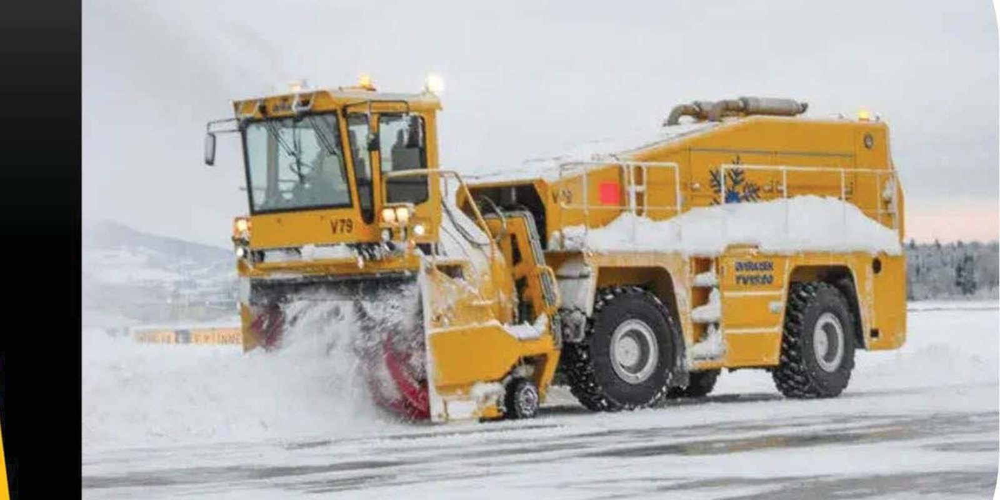
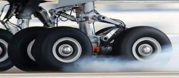
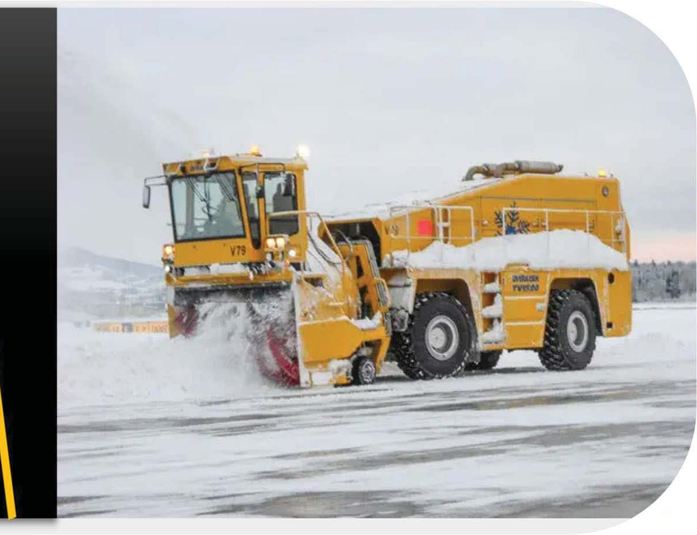

This course follows the company GRF syllabus — about 4 h 15 in the classroom:
| Module | Subject | Time |
|---|---|---|
| 1 | The Global Reporting Format (GRF) | 1 h 50 |
| 2 | The Runway Condition Assessment Matrix (RCAM) | 60 min |
| 3 | The Runway Condition Report (RCR) | 60 min |
| 4 | Transmission of the information (SNOWTAM, ATS, ATIS) and aircraft performance | 25 min + |
| — | Evaluation | 30–45 min |
Five questions guide the course: Why the GRF? What are the impacts? How is the RCAM used? How is an RCR written? Which information goes to whom?
Runway and taxiway excursions represent about 22 % of all accidents and are the third accident category by number of victims (IATA runway safety analysis 2010–2014, 415 accidents over five years). An excursion can be lateral (veer-off) or longitudinal (overrun), at take-off or at landing — about 90 % of them at landing.

Aircraft braking performance depends on the runway surface condition and on the environmental conditions: the quality of the contamination information is essential. The European Action Plan for the Prevention of Runway Excursions (EAPPRE) asked aerodromes for contaminant removal programmes, assessment whenever contamination appears or changes, and robust communication.
The regulatory chain: ICAO Annex 14 and Annex 15, PANS-Aerodromes and Circular 355 for aerodromes; Annexes 6, 8 and 15 for the other actors; in Europe, regulations (EU) 2018/1139 and 139/2014. More information: icao.int/safety/Pages/GRF.aspx.

The GRF was planned for 5 November 2020 and became applicable worldwide on 4 November 2021 (EASA rules from 12 August 2021).
What does ICAO pursue with the GRF? (choose the best answer)
Answer: B. Harmonised assessment and reporting, directly usable for aircraft performance — to improve safety.
Training material only. It does not replace the Aircraft Flight Manual, FCOM, QRH, MEL or the Domestic Airlines Operations Manual, which always take precedence.